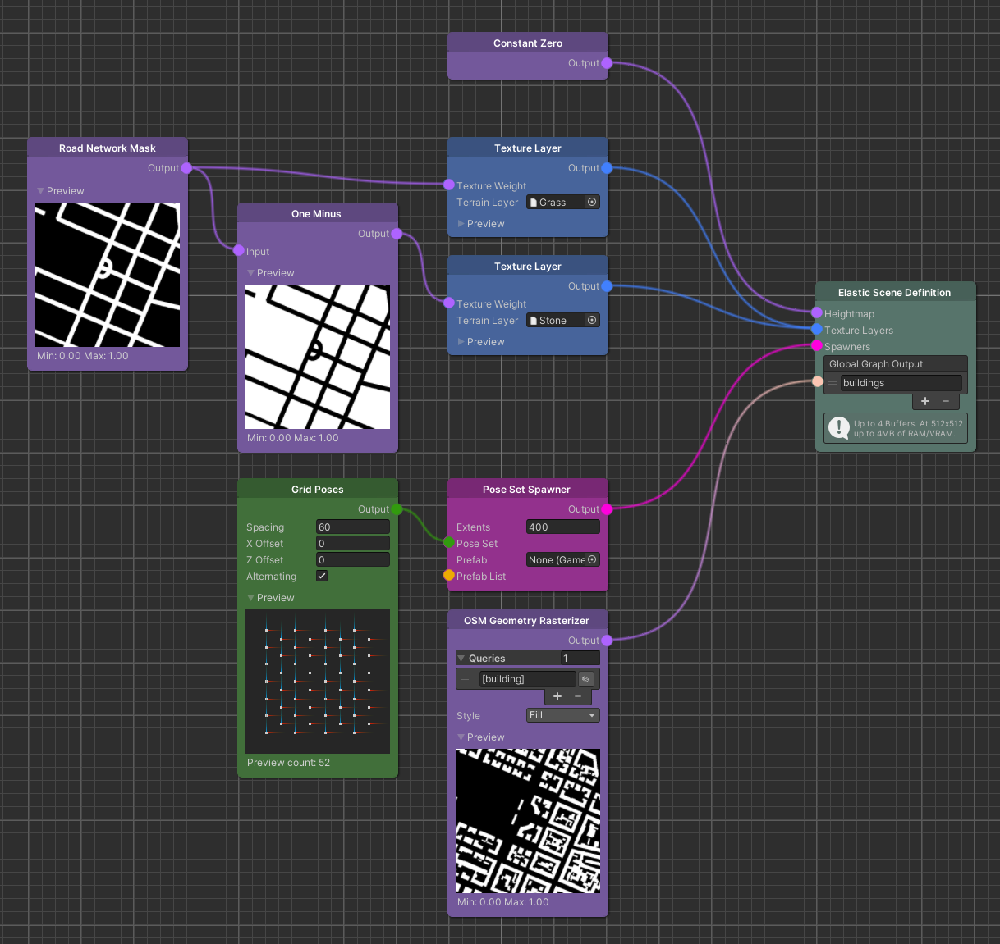

Elastic Scene Definition
Overview
The Elastic Scene Definition node functions as the output node of the graph and will be evaluated to fill the world.

Detailed Explanation
This node is evaluated by the Elastic Scene Generator and can be used to generate textured terrain using the heightmap and texture layer input but also to spawn objects. Additionally the global graph output offers named ports that can be queried from the Elastic Scene Generator. For more details on this read the how-to guide on graph data access.
Parameters
Inputs
| Name | Type | Description |
|---|---|---|
| Heightmap | Map | One map texture whose values are interpreted as height of the terrain. |
| Texture Layers | TextureLayer | Multiple texture layers that will be painted onto the terrain. |
| Spawners | Spawner | Multiple spawners that spawn their objects based on their configuration. |
| Global Graph Output | - | Node output that can be queried from scripts outside the graph. |
Use Cases

This example shows a simple scene with a flat and textured terrain, how objects can be spawned and exposes the information on whether a certain world position contains a building in the real world.
Further Reading
- Unity's Terrain Layer System
- Graph Data Access